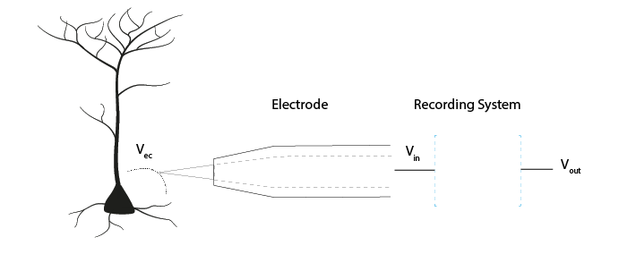
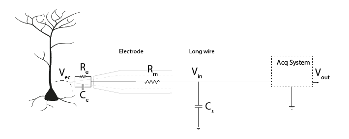
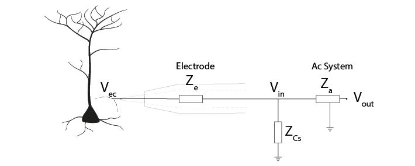
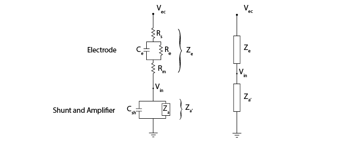
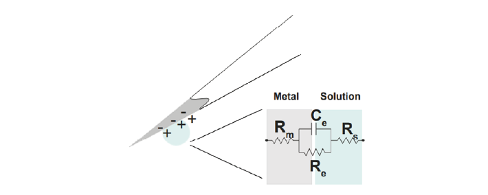
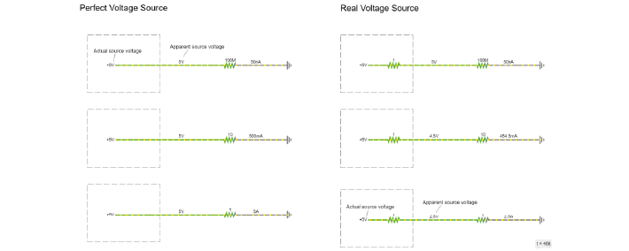
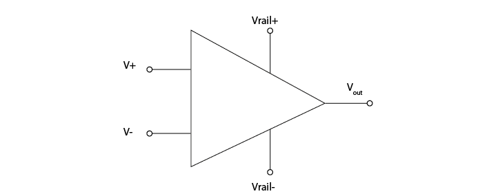
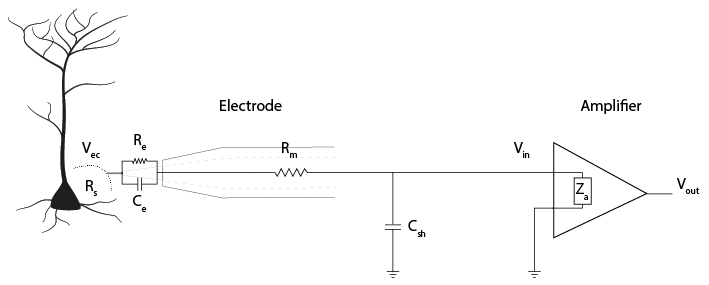
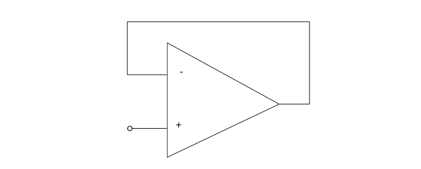

Theory Day 2#
Table of Contents
Yesterday, we said that an acquisition system must:
Detect changes in electric potential difference
Faithfully *transfer* this signal to our acquisition system output
Distinguish interesting biological signals from other sources of electrical noise
Impedance ratios determine signal transmission#
The signal Vec (V electrode) is measured at the electrode tip. Vin is the voltage that enters the acquisition system. Vout is the signal output of the acquisition system. Faithfully transferring the signal means not losing (much) signal between Vec, Vin, and Vout. This is all based on the idea of voltage dividers; that the voltage between two impedances in series will be determined by the ratio of their impedances.
Why is impedance important?#
The figure below includes the equivalent circuit of the electrode, as discussed yesterday. The signal Vec must travel through the electrode, to Vin, the voltage before the acquisition system itself. From there, currents coming from our neurons travel to ground. They can do so either by passing through our acquisition system, or (in parallel) they can be lost to ground through shunt impedance. Shunt impedance is primarily capacitive (see section below) and represented as (Cs). Shunt capacitances are created by cables or the sides of electrodes; they are ‘accidental’ but unavoidable capacitances in the system.
We can replace these components with a representation of the impedance (Z) they provide.
The impedance of the shunt capacitance, Zcs and the impedance of the acquisition system Za are impedances in parallel. We can simplify our circuit by combining their impedances and calling it Za’.
This gives us a voltage divider, similar to the one we built before, where:
The ratio of Ze and Za’ therefore determines how much of our electrode tip voltage Vec reaches Vin.
To get more of our voltage Vec into our recording system, we want to keep electrode impedance Ze low, and system input impedance Za’ very high.
If Za’ is not substantially greater than Ze, Vin will be much lower than Vec. To have high Za’, we need amplifiers with high input impedance and high shunt impedance.
Electrode Impedance#
The impedance of an electrode is a measure of its ability to resist the flow of charge across the electrode-solution interface (i.e., across the electronic conductor (metal) and ionic conductor (extracellular fluid)). It is the impedance of the whole electrode equivalent circuit we built yesterday, consisting of the resistance of the electrode metal (Rm) and the resistance (Re) and capacitance (Ce) of the double layer at the electrode-solution interface.
In polarized electrodes, the large Re prevents much current from taking this route. Therefore, in practice, the electrode is primarily the double-layer capacitor Ce in series with Rm and Rs (Robinson, 1968).
So far, we know that the impedance magnitude of a capacitor decreases with increased capacitance, and that electrode impedance is dominated by double layer capacitor, Ce. Therefore, to decrease our electrode impedance, we need to increase the electrode capacitance Ce. How can we increase the value of Ce?
To make C bigger, we can increase the surface area (A) of the electrode, for instance by electroplating a thin layer of gold on to an electrode. We can also coat electrodes with materials complemented with pseudo-capacitance, such as conducting polymers or transition metal oxide films, such as IrOx (Green, Lovell, Wallace, & Poole-Warren, 2008; Musa, 2011).
Electrode impedance magnitude is usually measured at 1 kHz, before and after electrode coating, allowing us to see an impedance decrease of up to 10-fold (Neto et al., 2018).
By increasing the capacitance (Ce) of our electrode, the electrode impedance (Ze) will be smaller, preserving more of our signal amplitude at Vin.
Shunt Impedance#
Shunt impedance is the total impedance of shunt capacitance Cs and shunt resistance Rsh. These are both routes to ground outside of the intended acquisition system. At the high frequencies (1kHz) we are interested in, the capacitive component will have relatively low impedance. It will therefore have more effect than the resistive component, so Rsh is often ignored.
Remember that any two conducting surfaces, with a non-conducting layer in between, is a capacitor. Shunt capacitance arises mainly from the capacitance across the thin insulation layer isolating an electrode and the surrounding electrolyte, as well as the cumulative capacitance along cables and connectors (Robinson, 1968).
The shunt capacitance for a tungsten wire (~50 to 100 pF) is usually higher than for a silicon probe (5-20 pF/cm). (Why? Think of what makes a capacitor, and the relative shape and conductances of these electrodes).
Try it yourself
Here is a model of the electrode with shunt capacitance, resistance, and amplifier in parallel to ground. You should see that either decreasing electrode impedance or increasing shunt impedance gives you a larger output voltage.
We want a large shunt impedance, to prevent current from flowing down this route. Being capacitive, the impedance decreases with signal frequency (Nelson et al., 2008). Therefore, to create a large shunt impedance, the shunt capacitance should be small:
However, some shunt capacitance is inevitable and often there is not much we can do about it. Because the shunt impedance is in parallel with the impedance of the acquisition system, we can focus on increasing the acquisition system impedance to give us a large Za’.
Amplifiers#
Amplifiers in the headstage prevent current being drawn#
A perfect 5V voltage source would always provide exactly 5 Volts, no matter what the rest of the circuit looks like. If we put a lot of high impedance components in the rest of the circuit, less current will flow, and if we put low impedance components we will get a high current.
A real voltage source has a bit of output impedance, which means it acts as a voltage source in series with an impedance. This is modelled here (click to view high-quality version in the simulator):
That invisible, small series resistance creates a voltage divider. Though the actual source voltage is the same 5V, the apparent voltage of the source varies depending on the ratio between the output impedance of the source, and the impedance of the rest of the circuit. The lower the impedance of the components used in the rest of the circuit, the higher the relative influence of the source output impedance, and the lower the apparent source voltage (the voltage ‘droops’).
In our acquisition system, the voltage source is the potential changes in the extracellular fluid (Vec). The resistive and capacitive properties of the electrode create an output resistance. The relative impedance of the circuit before and after Vin influences the magnitude of the signal at Vin. If we allow a lot of current to flow from our electrode to ground, we have a low impedance circuit, which will distort our signal. We therefore need something with a very high impedance to stop current being drawn from our Vec. Amplifiers do exactly this: their high input impedance prevents current flow from the electrodes, and amplifiers provide the necessary current for the rest of the circuit from a separate source.
The operational amplifier#
The ‘operational amplifier’ or ‘op-amp’ is a crucial building block of our acquisition system. The amplifier has two inputs (+ and -), one output, and two power rails (e.g. a 3 and -3V power rail).
Amplifiers have high input impedance#
The amplifier input impedance, Zais very high. The circuit acts as though the current has to cross a very high resistor to actually enter the amplifier. The current flow therefore becomes very low (Ferree et al., 2001), preventing us from drawing much current from the electrode to ground.
Here is the amplifier added into our circuit diagram:
Amplifiers have low output impedance#
The output impedance of amplifiers is very low, which means that a lot of current can flow from the amplifier. This current enables the driving of the signal through all the subsequent circuits (e.g., interconnect lines, multiplexer, and ADC). By placing an amplifier in our circuit, we make sure that the rest of our recording circuit is driven by current provided by the amplifier, not by current provided by the electrode tip.
Amplifiers output a voltage#
The amplifier outputs the voltage difference between the voltages at its two inputs.
How does it do that?
If the difference between its two inputs is positive, the amplifier connects its output to the positive ‘power rail’, giving a positive output voltage. If the positive power rail is 3V, the amplifier will output (pretty much) that.
If the difference between the two inputs is negative, the amplifier will connect its output to the negative rail, outputting -3V. While doing that, the operational amplifier draws basically no current on its inputs.
In this configuration, the amplifier does not distinguish between small or large differences in voltage across its inputs; it will only every output the most negative or most positive voltage it can. Another way to say that, is that it amplifies the difference between its inputs with a huge factor, also called ‘gain’. This gain is so large that the amplifier always saturates, providing either the maximum or minimum voltage it can.
Negative feedback prevents saturation#
If we connect the output of the operational amplifier to the ‘-’ input, then the following happens:
Initially, if ‘+’ is higher than ‘-’, the operational amplifier will output a high voltage.
If we connect the output back to ‘-’, the amplifier will continue to output a high voltage, but now this voltage starts to increase the value of ‘-’, bringing the value of the inputs closer together. This behaviour will keep the voltages at its ‘+’ and ‘-’ inputs the same.
Now, the ‘-’ input is always actively driven to follow the voltage on the ‘+’ input. This means that whatever voltage we connect to the ‘+’ input can be measured just by looking at the ‘-’ input (which is connected to / the same as the output). Increasing ‘+’ will induce a difference between ‘+’ and ‘-’, but the corresponding change in the amount of output voltage will bring ‘-’ back up.
We can measure the voltage that at ‘+’ by just measuring the output of the operational amplifier, BUT because the ‘+’ input draws almost no current at all (in other words, very high input impedance), we can now measure weak signals. The output of the operational amplifier on the other hand side has very low output impedance- in other words, we can draw a lot of current from it and it will keep its voltage.
You can run this example in the simulator (click the image above), and see if what we said about the operational amplifier makes sense.
An op-amp as a headstage#
Our electrodes will be attached to a headstage, which contains an amplifier. This amplification step performs several functions:
Prevents us from drawing current and allows to drive current to ADC and computer
Rejects common mode noise
Increases the range of the signal to fit the dynamic range of our digitizer